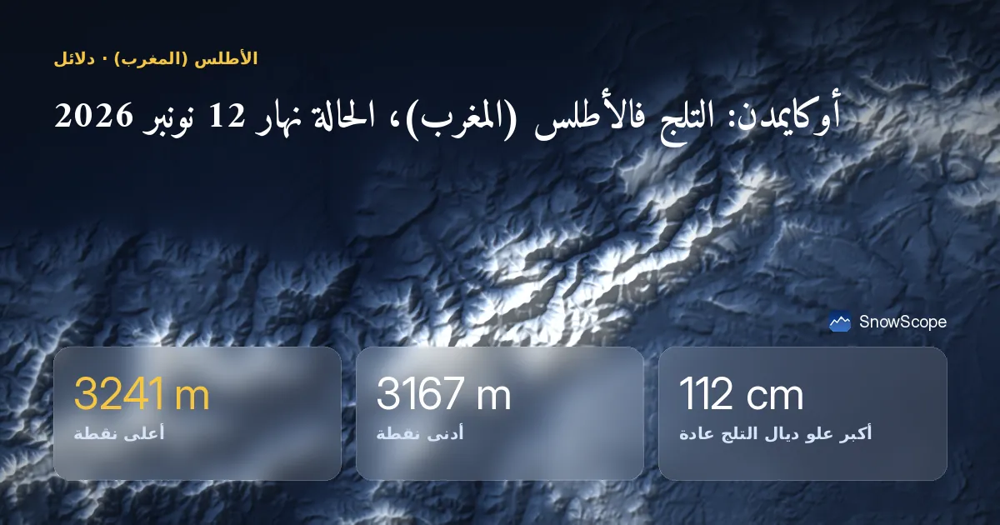

أوكايمدن: التلج فالأطلس (المغرب)، الحالة نهار 12 نونبر 2026
نونبر كايجي جاف في الأطلس العالي. SnowScope كايصيف 0 سم على تلاتة ارتفاعات ديال Oukaïmeden (القاعدة 2600 م، الوسط 2929 م، القمة 3258 م) يوم 12 نونبر، ما فيش تلج جديد من الأسبوع اللي فات والا ما فيش توقعات ليه للسبعة أيام الجاي. هادا دخل بحال ما وقع؛ عادة التلج الأول كايتشبع هنا حول 5 نونبر؛ لاكين بداية الخريف الشوية ما كاتقول حتا حاجة على الشتاء اللي جاي.
شوف توقعات التلج مباشرة ديال Oukaïmeden فالتطبيق ديال SnowScopeالعلو ديال التلج، التنبيهات والخريطة 3D، فابور.

تلاتة ارتفاعات، كل واحد فاضي
الخريطة ديال التلج كاتصيف رمادي فوادي الأوريكة وعلى البيستات العالية: 0 سم كاتقاس في القاعدة والوسط والقمة. الـ 48 ساعة اللي فاتو ما جابو حتا حاجة، والا الأسبوع اللي فات. التوقعات ديال السبعة أيام الجاي ما فيش فيها تلج هادا.
واحد في كل مكان ما فيه حتا شك. بيستات ديال توبقال ومرتاحاتها ما فيها حتا حاجة غير الصخر والحصى هسع.
نونبر عادة ما فيه حتا حاجة بحال
على 46 شتاء اللي فاتو (1980-81 لـ 2025-26)، التلج الأول عادة كايوصل Oukaïmeden حول 5 نونبر. حتى في نونبر عادي، العلو ديال التلج كايكون شويا: القيمة الوسطانية 2 سم في القاعدة، 3 سم في الوسط و 3 سم في القمة. نونبر فيه تلج كايقدر يجيب 30 لـ 38 سم في القاعدة والا 38 سم في القمة، لاكين هادا نادر.
دجنبر كاتجي النقلة الكبيرة: 16 سم كايتراكم في القاعدة، 18 سم في الوسط و 20 سم في القمة في الشتاء العادي.
واش كايكون أعلى العلو ديال التلج
مارس هو الشهر الغامق في كل الارتفاعات. في شتاء وسط، القاعدة كاتحوس 46 سم، الوسط كايكون في 53 سم والقمة كايوصلو 58 سم. القيمة الوسطانية ديال الأعلى على 46 شتاء كاتجري 78 سم في القاعدة، 92 سم في الوسط و 112 سم في القمة. أضعف شتاء وقف في 49 سم في القمة؛ أغنى شتاء وصل 248 سم.
الشتاء اللي فات (2025-26) كان معطاء: 149 يوم تلج والغطاء عميق طول الوقت. الأسبوع اللي فيه أحسن ضمانة باش توصل 50 سم والا أكتر في القمة هو الأسبوع 9 (آخر فبراير/أول مارس)، كيتوصل فيه 61 ديال المية ديال الشتوات اللي فاتو.
واش الارتفاع اللي فيه أحسن فرصة
القمة في 3258 م عندها أقوى الحالة ديال الإحصاء للتلج المضمون. على الشتوات اللي فاتو، القمة كاتجيب تلج بزاف (50 سم والا أكتر) في نص الموسم والا أكتر خلال ستة أسابيع؛ الوسط عندو غطاء مضمون في أربعة أسابيع؛ القاعدة مضمونة في أسبوع وحد بقا. الارتفاع هنا يهم بزاف.
الفرق كايراكم على الشتاء كاملو. القمة كاتوسط 112 سم العلو ديال الأعلى؛ الوسط 92 سم؛ القاعدة 78 سم. الفرق كايكبر في الشتوات الضعاف كايصغر في الكريمة، لاكين القمة عادة كاتحوس أحسن تلج.

باش تعدّ نزهة ل Oukaïmeden
نونبر جاف هادا ما فيه حتا حاجة غير عادية في الأطلس. التلج كايجي هنا بالنبضات - عواصف كبيرة وما فيش تراكم مستقر - فالشكل ديال أسبوع واحد ما كايقول والا حاجة على الشهر اللي جاي. إذا كنت بغيت تسكي في Oukaïmeden، اقصد من آخر يناير لـ مارس وشوف الخريطة ديال التلج أسبوع قبل الرحيل.
الطريق ديال مراكش قدرة تقفل في الثلج الكتير: أتأكد من الحالة محليا قبل ما تروح.
نصايح للي كيتزلجو
- صقّع البال في القمة في 3258 م: هي كاتحوس التلج أطول مدة وأعمق. واش القاعدة والوسط رقيقين، القمة عادة كاتبقى قابلة للتزلج.
- حفظ الصفحة ديال Oukaïmeden وحدّث بحال ما جاي التنبيه. التلج هنا كايجي في حوادث كبيرة، فالتغييرات كاتظهر بحال بسرعة.
- آخر فبراير لـ مارس كايعطيو أحسن فرصة إحصاء باش يكون الغطاء عميق. إذا كنت قادر تكون مرن، ولاك هادا الوقت اللي باش تحجز.
- فتح أو قفل الرفع والمحطة كايعتمد على المشغّل ديال المحطة، ما فيش علاقة بالعلو ديال التلج اللي كايظهر في الخريطة ديالنا.
- عواصف الشتاء قدرة تبيت 20-30 سم في حادثة واحدة في هادا الارتفاع. واش التلج كايجي، قدر يقفل الطريق ليوم والا لايام.
على هاد الأرقام
العلو ديال التلج فالمحطات هو أكثر تلج فالجهة الفوقانية فالتاريخ المكتوب؛ هادو تقديرات لمنطقة، ماشي قياس فنقطة وحدة. التوقعات يمكن تتبدل. ديما شوف النشرة الرسمية ديال الانهيارات قبل ما تخرج من البيست.
كيفاش تستاشهد بهاد المقال
للبحث، التعليم ولا الصحافة: الأرقام والرسومات تقدر تعاود تخدم بيهم بحرية تحت CC BY 4.0 مع هاد الاستشهاد.
SnowScope (2026), أوكايمدن: التلج فالأطلس (المغرب)، الحالة نهار 12 نونبر 2026, https://snowscope.app/blog/ar/2026/11/oukaimeden-neige-atlas-maroc-12-novembre-2026.html, تشاف ف 2026-11-12
SnowScope (Atlas Labs). (2026, November 12). أوكايمدن: التلج فالأطلس (المغرب)، الحالة نهار 12 نونبر 2026. SnowScope snow reports. https://snowscope.app/blog/ar/2026/11/oukaimeden-neige-atlas-maroc-12-novembre-2026.html
BibTeX
@misc{snowscope2026oukaimedenneigeatlasmaro,
author = {{SnowScope (Atlas Labs)}},
title = {أوكايمدن: التلج فالأطلس (المغرب)، الحالة نهار 12 نونبر 2026},
year = {2026},
month = nov,
howpublished = {\url{https://snowscope.app/blog/ar/2026/11/oukaimeden-neige-atlas-maroc-12-novembre-2026.html}},
note = {Published 2026-11-12 07:16 UTC; accessed 2026-11-12}
}· CC BY 4.0 · الطريقة، الداتا والأدوات →
Oukaïmeden: التلج والحرارة حسب العلو، هاد الشتا مقارنة مع اللي فاتت (الأدوات) →
تابع Oukaïmeden
فابور: ميساج ملي يجي التلج، والتوقعات كل صباح.
تقارير أخرى ديال التلج

دجنبر يجيب غير 18 سم فالعمق ديال التلج فالمنتصف ديال الجبل فأوكايمدن، بحال 53 سم فمارس. البداية ديال الموسم فيها التلج قليل لكن ممكن. المعطيات من 13 نوفمبر 2026.

Oukaïmeden على بُعد 50 كم من مراكش. التلج ديال ديسمبر رقيق وما يتوقعش عليه: خطط حول العواصف، ما على التقويم. المعطيات من 13 نونبر 2026.

فـ المحطة ديال التزلج ديال Oukaïmeden فـ المغرب، 15 دجنبر عادي يجيب بغاية 16 سم فـ الجهة المتوسطة. SnowScope يعطيك الحظوظ من 46 شتوة ديال المعطيات.